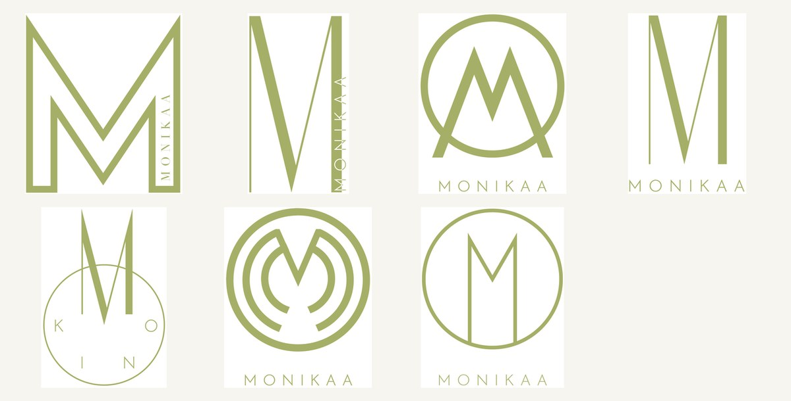
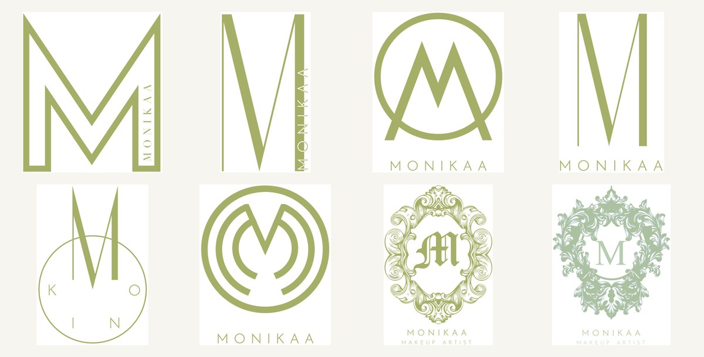

A logo identity for Monikaa — "Makeup by Mon", a makeup artist. The brief was a single, elegant "M"; the answer was to draw it a dozen ways — ornate, winged, geometric — before resolving to one confident mark in olive and gold.
For a makeup artist, the logo is the signature — it goes on the kit, the chair-back, the Instagram grid. Monikaa wanted something elegant built on her initial, so the project became a proper exploration: a wide field of "M" monograms, each a different temperament, laid out so a clear favourite could emerge rather than be assumed.
The routes ran from ornate vintage frames to winged circles to clean geometric ciphers — and the final mark took the best of the modern ones, paired with a soft hand-script.


A range wide enough to choose from.
The value of an exploration is the spread. One route framed the "M" in a filigree crest — classic, bridal, traditional. Another set it inside winged circles for something more aspirational. A third reduced it to two clean geometric strokes. Seeing them together makes the decision easy: you don't argue about taste in the abstract, you point at the one that's right.
The final mark interlocks two angular "M" forms into a single gold-on-olive monogram — modern, a little architectural, unmistakably a signature — and finishes with "Makeup Stories by Mon" in a quiet hand-script. Confident enough to stand alone on a compact, soft enough to belong to a beauty brand.